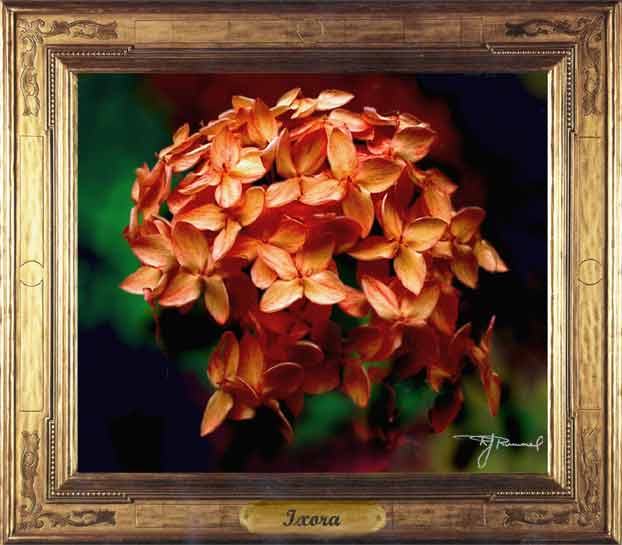

Ixora flowers. Paintage; airbursh. These flowers are from the javanica (from Java) variety, which is a flowering shrub that blooms continuously in Hawaii. It is easy to maintain and grow, and prolifertes from underground roots.
Next
painting.
Return
to Gallery 2
Home